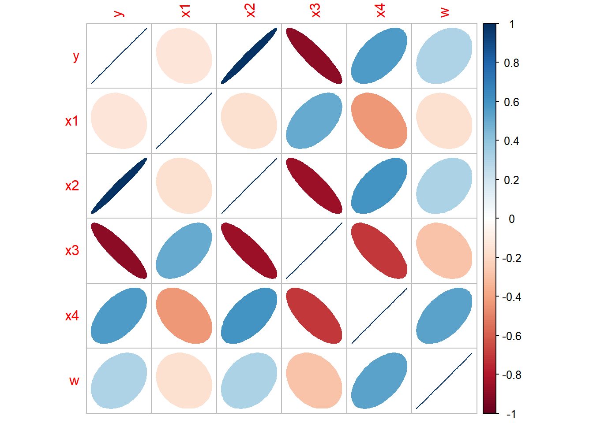
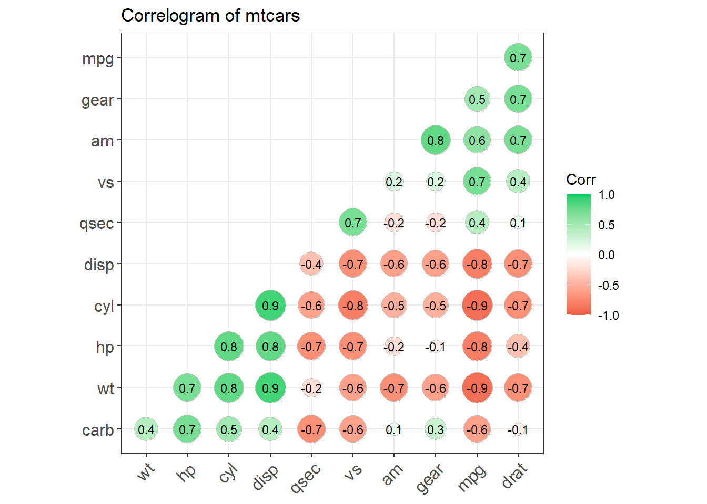
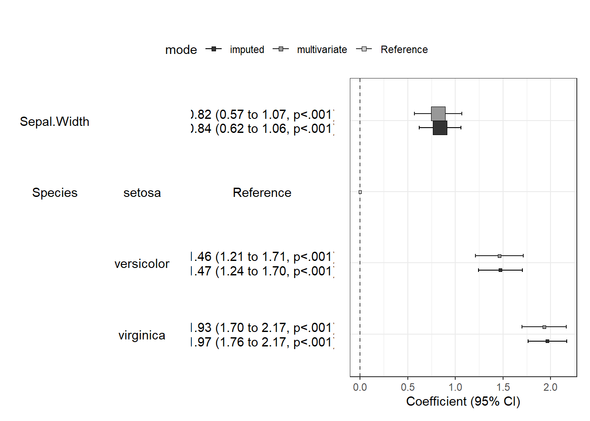

Linear Regression
Correlation Analysis
The correlation measures the strength of a linear relationship.
Pearson correlation coefficient
The Pearson correlation coefficient measures the linear relationship between two variables, X and Y. It has values between +1 and -1, where 1 indicates total positive linear correlation, 0 indicates no linear correlation, and -1 indicates total negative linear correlation. A key mathematical property of the Pearson correlation coefficient is its invariance under separate changes in the location and scale of the two variables. In other words, we can transform X to \(a + bX\) and Y to \(c + dY\) without changing the correlation coefficient, where \(a\), \(b\), \(c\), and \(d\) are constants with \(b, d > 0\). Note that more general linear transformations can, however, alter the correlation.
\[{\displaystyle \rho _{X,Y}=\operatorname {corr} (X,Y)={\operatorname {cov} (X,Y) \over \sigma _{X}\sigma _{Y}}={\operatorname {E} [(X-\mu _{X})(Y-\mu _{Y})] \over \sigma _{X}\sigma _{Y}}}\]
\[{\displaystyle \rho _{X,Y}={\operatorname {E} (XY)-\operatorname {E} (X)\operatorname {E} (Y) \over {\sqrt {\operatorname {E} (X^{2})-\operatorname {E} (X)^{2}}}\cdot {\sqrt {\operatorname {E} (Y^{2})-\operatorname {E} (Y)^{2}}}}}\]
Conditions for Applying the Pearson Correlation Coefficient:
In correlation analysis, the first consideration is whether there is likely a relationship between the two variables. If the answer is affirmative, then quantitative analysis can proceed. Additionally, the following factors must be noted (the first two are the strictest requirements, while the third is more lenient; if violated, the results tend to remain robust):
The Pearson correlation coefficient is suitable for cases of linear correlation. For more complex relationships, such as curvilinear correlations, the size of the Pearson correlation coefficient does not accurately represent the strength of association.
Extreme values in the sample can significantly impact the Pearson correlation coefficient, so careful consideration and handling are needed. If necessary, outliers can be removed or transformed to avoid erroneous conclusions due to one or two extreme values.
The Pearson correlation coefficient requires the variables to follow a bivariate normal distribution. It’s important to note that a bivariate normal distribution is not simply a requirement for each variable (X and Y) to be normally distributed individually but rather for them to jointly follow a bivariate normal distribution.
Since the Pearson correlation coefficient is calculated based on the variances and covariances of the raw data, it is sensitive to outliers and measures linear relationships. Thus, a Pearson correlation coefficient of zero only indicates no linear relationship but does not rule out other types of relationships, such as curvilinear correlation.
Spearman’s Rank Correlation Coefficient
The Spearman and Kendall correlation coefficients are both based on the relative ranks and sizes of observations, forming a more general non-parametric method that is less sensitive to outliers and therefore more robust. They primarily measure the association between variables.
Spearman’s rank correlation uses the ranks of the two variables to assess linear association and does not require any assumptions about the distribution of the original variables, making it a non-parametric statistical method. Therefore, it has a broader application range than the Pearson correlation coefficient. Spearman’s rank correlation can also be calculated for ordinal data. For data that meet Pearson’s assumptions, Spearman’s coefficient can also be calculated, although it has lower statistical efficiency and may not detect relationships as effectively as Pearson’s.
When there are no ties in the data and the two variables are perfectly monotonically related, the Spearman correlation coefficient will be +1 or -1. Even if outliers are present, they typically do not significantly impact the Spearman correlation coefficient, as outliers’ ranks tend to remain at the extremes (e.g., first or last), thus minimizing their effect on Spearman’s measure of association.
\[{\displaystyle r_{s}=\rho _{\operatorname {rg} _{X},\operatorname {rg} _{Y}}={\frac {\operatorname {cov} (\operatorname {rg} _{X},\operatorname {rg} _{Y})}{\sigma _{\operatorname {rg} _{X}}\sigma _{\operatorname {rg} _{Y}}}}}\]
Kendall’s Rank Correlation Coefficient
The Kendall rank correlation coefficient is a measure of ordinal association, suitable for reflecting the correlation between categorical variables when both variables are ordered categories. It is denoted by the Greek letter \(\tau\), and ranges between -1 and 1. When \(\tau = 1\), it indicates perfect ordinal agreement between two random variables, while \(\tau = -1\) indicates perfect ordinal disagreement. A value of \(\tau = 0\) implies that the two variables are independent.
Formula: The Kendall coefficient is based on concordance. For two pairs of observations \((X_i, Y_i)\) and \((X_j, Y_j)\), if \(X_i > X_j\) and \(Y_i > Y_j\) (or vice versa), the pair is considered concordant; otherwise, it is discordant. The Kendall correlation coefficient is calculated as follows:
\[ \tau = \frac{{\text{number of concordant pairs} - \text{number of discordant pairs}}}{{n \choose 2}} \]
where \({n \choose 2} = \frac{n(n-1)}{2}\) represents the number of ways to choose two items from \(n\) items.
Intraclass Correlation Coefficient (ICC)
When measuring quantitative characteristics in units organized into groups, the intraclass correlation coefficient (ICC) describes how similar units within the same group are to each other. Unlike most correlation measures, ICC operates on group-structured data rather than paired observations. ICC is commonly used to assess the similarity of quantitative attributes among individuals with specific familial relationships or to evaluate the consistency or reliability of measurement methods or raters for the same quantitative outcome.
Fisher’s original ICC is algebraically similar to the Pearson correlation coefficient but differs in that it centers and scales data based on a pooled mean and standard deviation across groups. This pooled scaling is meaningful for ICC because all quantities being measured are the same, although they pertain to different units in various groups.
The formula for ICC is:
\[ r = \frac{1}{Ns^2} \sum_{n=1}^{N}(x_{n,1} - \bar{x})(x_{n,2} - \bar{x}), \]
where:
\[ \bar{x} = \frac{1}{2N} \sum_{n=1}^{N}(x_{n,1} + x_{n,2}), \]
and
\[ s^2 = \frac{1}{2N} \left\{ \sum_{n=1}^{N}(x_{n,1} - \bar{x})^2 + \sum_{n=1}^{N}(x_{n,2} - \bar{x})^2 \right\}. \]
In Pearson correlation, each variable is centered and scaled by its own mean and standard deviation:
\[ r_{xy} = \frac{\sum_{i=1}^{n} \left( x_i - \bar{x} \right) \left( y_i - \bar{y} \right)}{\sqrt{\sum_{i=1}^{n} \left( x_i - \bar{x} \right)^2} \sqrt{\sum_{i=1}^{n} \left( y_i - \bar{y} \right)^2}}. \]
Visualize Correlation in R
bank<- data.frame(
y=c(1018.4,1258.9,1359.4,1545.6,1761.6,1960.8),
x1=c(159,42,95,102,104,108),
x2=c(223.1,269.4,297.1,330.1,337.9,400.5),
x3=c(500,370,430,390,330,310),
x4=c(112.3,146.4,119.9,117.8,122.3,167.0),
w=c(5,6,8,3,6,8)
)
cor(bank[,c(2,3,4,5)],method = "pearson")## x1 x2 x3 x4
## x1 1.0000000 -0.1604025 0.5095785 -0.4331830
## x2 -0.1604025 1.0000000 -0.8558009 0.5987314
## x3 0.5095785 -0.8558009 1.0000000 -0.7010598
## x4 -0.4331830 0.5987314 -0.7010598 1.0000000## Visualize the correlation matrix
library(corrplot)
bank.cor <- cor(bank)
corrplot(bank.cor, method = "ellipse")
## devtools::install_github("kassambara/ggcorrplot")
library(ggplot2)
library(ggcorrplot)
## Correlation matrix
data(mtcars)
corr <- round(cor(mtcars), 1)
## Plot
ggcorrplot(corr, hc.order = TRUE,
type = "lower",
lab = TRUE,
lab_size = 3,
method="circle",
colors = c("tomato2", "white", "springgreen3"),
title="Correlogram of mtcars",
ggtheme=theme_bw)
Ordinary Least Squares (OLS)
Assumpions
\[{\displaystyle \mathbf {y} =\mathbf {X} {\boldsymbol {\beta }}+{\boldsymbol {\varepsilon }}\;} \ \ \ \ {\displaystyle \;{\boldsymbol {\varepsilon }}\sim {\mathcal {N}}(\mathbf {0} ,\sigma ^{2}\mathbf {I} _{T})}.\]
- \(y_{i}=\alpha+\beta x_{i}+\varepsilon_{i}\)
- \(\mathrm{E}\left(\varepsilon_{i}\right)=0\)
- \(\operatorname{var}\left(\varepsilon_{i}\right)=\sigma^{2}\)
- \(\operatorname{cov}\left(\varepsilon_{i}, \varepsilon_{j}\right)=0\)
- \(\varepsilon_{i} \sim\) Normal Distribution
Interpretation
Linearity: The relationship between the predictor and response variables should be linear. If this relationship isn’t clearly linear, data transformations (e.g., logarithmic, polynomial, or exponential transformations) can be applied to the variables X or Y to achieve linearity.
Uncorrelated Residuals: Residuals (errors) should be uncorrelated with each other, meaning there should be no pattern in the residuals.
Homoscedasticity: The errors should be normally distributed and have constant variance. This implies that for different input values, the variance of the errors remains constant. If this assumption is violated, parameter estimates may become biased, leading to significance test results that are too high or too low, potentially resulting in incorrect conclusions. This situation is known as heteroscedasticity.
Non-collinearity: There should be no linear relationship between predictor variables; predictors should ideally be independent of each other. Collinearity can lead to biased estimates.
Outliers: Outliers can severely impact parameter estimation. Ideally, outliers should be removed before fitting a model using linear regression.
Matrix Solution
Least squares method minimum \(J\left(\theta_{0}, \theta_{1}\right)\) and find out the smallest \(\theta_{0}\) and \(\theta_{1}\)
\[J(\theta_0, \theta_1) = \sum\limits_{i=1}^{m}(y^{(i)} - h_\theta(x^{(i)})^2 = \sum\limits_{i=1}^{m}(y^{(i)} - \theta_0 - \theta_1 x^{(i)})^2\]
Assume \[h_\theta(x_1, x_2, ...x_n) = \theta_0 + \theta_{1}x_1 + ... + \theta_{n}x_{n}\] as \[h_\mathbf{\theta}(\mathbf{x}) = \mathbf{X\theta}\]
\[J(\mathbf\theta) = \frac{1}{2}(\mathbf{X\theta} - \mathbf{Y})^T(\mathbf{X\theta} - \mathbf{Y})\]
Take the derivative of the θ vector for this loss function to 0
\[\frac{\partial}{\partial\mathbf\theta}J(\mathbf\theta) = \mathbf{X}^T(\mathbf{X\theta} - \mathbf{Y}) = 0\] \[\mathbf{X^{T}X\theta} = \mathbf{X^{T}Y}\] \[\mathbf{\theta} = (\mathbf{X^{T}X})^{-1}\mathbf{X^{T}Y}\]
Gauss-Markov Theorem
The Gauss-Markov Theorem establishes that the Ordinary Least Squares (OLS) method has particularly desirable properties. Specifically, when the mean of the error terms is zero, the OLS estimator \(\hat{\beta}\) is unbiased. If the error terms also have constant variance, then OLS provides the Best Linear Unbiased Estimator (BLUE). Additionally, if the error terms in a linear regression model are uncorrelated, the OLS estimator has the lowest sampling variance among linear unbiased estimators. While \(\hat{\beta}\) is a reasonable estimator, there are other options. However, OLS is preferred for three key reasons:
Orthogonal Projection: OLS results from an orthogonal projection onto the model space, providing a geometrically intuitive solution.
Maximum Likelihood Estimator: If the errors are independent and identically normally distributed, OLS serves as the maximum likelihood estimator (MLE). In essence, the MLE for \(\hat{\beta}\) is the value that maximizes the likelihood of observing the given data.
Gauss-Markov Theorem: The theorem confirms that OLS provides the best linear unbiased estimate (BLUE), ensuring minimum variance within the class of linear unbiased estimators.
limitation
Limitations of Ordinary Least Squares (OLS):
Matrix Inversion Requirement: OLS requires calculating the inverse of \(\left(\mathbf{X}^{\mathrm{T}} \mathbf{X}\right)\). If this matrix is not invertible, OLS cannot be directly applied. In such cases, gradient descent can still be used. Alternatively, we can restructure the sample data by removing redundant features to ensure that \(\left(\mathbf{X}^{\mathrm{T}} \mathbf{X}\right)\) has a non-zero determinant, allowing OLS to proceed.
High Dimensionality: When the number of features (\(n\)) is very large, calculating the inverse of the \(\left(\mathbf{X}^{\mathrm{T}} \mathbf{X}\right)\) matrix (an \(n \times n\) matrix) becomes computationally expensive or even infeasible. Iterative methods, like gradient descent, remain viable in such cases. As a rule of thumb, if \(n\) exceeds 10,000 and distributed computing resources are limited, iterative methods are recommended. Alternatively, dimensionality reduction techniques, such as Principal Component Analysis (PCA), can reduce the feature space, enabling OLS to be applied.
Nonlinear Relationships: If the relationship between variables is not linear, OLS cannot be directly applied, as it is designed for linear models. Transforming the relationship into a linear form may allow OLS to be used, but gradient descent is a more flexible option that can handle nonlinear relationships.
Special Cases in Sample Size: When the number of samples (\(m\)) is very small, specifically smaller than the number of features (\(n\)), the system of equations is underdetermined, making it difficult to fit the data using standard optimization methods. When \(m = n\), the system can be solved using standard equations. If \(m > n\), the system becomes overdetermined, which is the typical scenario where OLS performs effectively.
Model Statistics
Residuals Standard Error
## Build Model
y <- c(8.04,6.95,7.58,8.81,8.33,9.96,7.24,4.26,10.84,4.82,5.68)
x1 <- c(10,8,13,9,11,14,6,4,12,7,5)
set.seed(15)
x2 <- sqrt(y)+rnorm(length(y))
model <- lm(y~x1+x2)
## Residual Standard error (Like Standard Deviation)
k <- length(model$coefficients)-1 # Subtract one to ignore intercept
SSE <- sum(model$residuals**2)
n <- length(model$residuals)
Residual_Standard_Error <- sqrt(SSE/(n-(1+k)))R-Squared
R2 is a statistic that will give some information about the goodness of fit of a model. In regression, the R2 coefficient of determination is a statistical measure of how well the regression predictions approximate the real data points. An R2 of 1 indicates that the regression predictions perfectly fit the data.
The total sum of squares \[{\displaystyle SS_{\text{tot}}=\sum _{i}(y_{i}-{\bar {y}})^{2}}\] The sum of squares of residuals \[{\displaystyle SS_{\text{res}}=\sum _{i}(y_{i}-f_{i})^{2}=\sum _{i}e_{i}^{2}\,}\] \[{\displaystyle R^{2}=1-{SS_{\rm {res}} \over SS_{\rm {tot}}}\,}\]
## Build Model
y <- c(8.04,6.95,7.58,8.81,8.33,9.96,7.24,4.26,10.84,4.82,5.68)
x1 <- c(10,8,13,9,11,14,6,4,12,7,5)
set.seed(15)
x2 <- sqrt(y)+rnorm(length(y))
model <- lm(y~x1+x2)
## Multiple R-Squared
SSyy <- sum((y-mean(y))**2)
SSE <- sum(model$residuals**2)
(SSyy-SSE)/SSyy
# Alternatively
1-SSE/SSyyAdjusted R-Squared
Adjusted R-Squared normalizes Multiple R-Squared by taking into account how many samples you have and how many variables you’re using.
\[{\displaystyle {\bar {R}}^{2}=1-(1-R^{2}){n-1 \over n-p-1}}\]
## Adjusted R-Squared
n <- length(y)
k <- length(model$coefficients)-1 # Subtract one to ignore intercept
SSE <- sum(model$residuals**2)
SSyy <- sum((y-mean(y))**2)
1-(SSE/SSyy)*(n-1)/(n-(k+1))T Statistic
Null Hypothesis is that the coefficients associated with the variables is equal to zero. The alternate hypothesis is that the coefficients are not equal to zero (i.e. there exists a relationship between the independent variable in question and the dependent variable).
We can interpret the t-value something like this. A larger t-value indicates that it is less likely that the coefficient is not equal to zero purely by chance. So, higher the t-value, the better.
Pr(>|t|) or p-value is the probability that you get a t-value as high or higher than the observed value when the Null Hypothesis (the β coefficient is equal to zero or that there is no relationship) is true. So if the Pr(>|t|) is low, the coefficients are significant (significantly different from zero). If the Pr(>|t|) is high, the coefficients are not significant.
\[t−Statistic = {β−coefficient \over Std.Error}\]
F Statistic
\(\mathrm{H}_{0}: \beta_{1}=\ldots \beta_{\mathrm{p}-1}=0\)
\[Std. Error = \sqrt{MSE} = \sqrt{\frac{SSE}{n-q}}\] \[MSR=\frac{\sum_{i}^{n}\left( \hat{y_{i} - \bar{y}}\right)}{q-1} = \frac{SST - SSE}{q - 1}\] \[F-statistic = \frac{MSR}{MSE}\]
linearMod <- lm(dist ~ speed, data=cars)
modelSummary <- summary(linearMod) # capture model summary as an object
modelCoeffs <- modelSummary$coefficients # model coefficients
beta.estimate <- modelCoeffs["speed", "Estimate"] # get beta estimate for speed
std.error <- modelCoeffs["speed", "Std. Error"] # get std.error for speed
t_value <- beta.estimate/std.error # calc t statistic
p_value <- 2*pt(-abs(t_value), df=nrow(cars)-ncol(cars)) # calc p Value
f_statistic <- modelSummary$fstatistic[1] # fstatistic
f <- summary(linearMod)$fstatistic # parameters for model p-value calc
model_p <- pf(f[1], f[2], f[3], lower=FALSE)
## For Calculation
data(savings)
g < - 1m (sr ˜ pop15 + pop75 + dpi + ddpi, savings)
summary (g)
## Test Beta1 = Beta2 = Beta3 = Beta4 = 0
(tss < - sum((savings$sr-mean (savings$sr))^2))
(rss < - deviance(g))
(fstat < - ((tss-rss)/4)/(rss/df.residual(g)))
## F Test
1-pf (fstat, 4, df.residual (g)) Model Comparasion
g2 < - 1m (sr ˜ pop75 + dpi + ddpi, savings)
## d compute the RSS and the F-statistic:
(rss2 < - deviance (g2))
(fstat < - (deviance (g2)-deviance (g))/(deviance (g)/df.residual(g)))
## P value
1-pf (fstat, l, df.residual(g))
## relate this to the t-based test and p-value by:
sqrt (fstat)
(tstat < - summary(g)$coef[2, 3])
2 * (l-pt (sqrt (fstat), 45))
## more convenient way to compare two nested models is:
anova (g2, g)
## Analysis of Variance Table
## Model 1: sr ˜ pop75 + dpi + ddpi
## Model 2: sr ˜ pop15 + pop75 + dpi + ddpiConfidence Intervals
Confidence Intervals for \(\beta\)
\[\hat{\beta}_{i} \pm t_{n-p}^{(\alpha / 2)} \hat{\sigma} \sqrt{\left(X^{T} X\right)_{i i}^{-1}}\]
Alternatively, a \(100(1-\alpha) \%\) confidence region for \(\beta\) satisfies:
\[(\hat{\beta}-\beta)^{T} X^{T} X(\hat{\beta}-\beta) \leq p \hat{\sigma}^{2} F_{p, n-p}^{(\alpha)}\]
Confidence Intervals for Predictions
It’s essential to distinguish between predicting the future mean response and predicting an individual future observation.
Prediction of a Future Observation: Suppose a specific house with characteristics \(x_0\) is on the market. Its selling price would be \(x_0^{T} \beta + \varepsilon\), where \(\varepsilon\) accounts for the random error with mean zero (\(\mathrm{E} \varepsilon = 0\)). The predicted price is \(x_0^{T} \hat{\beta}\). However, in assessing the variance of this prediction, the variance of \(\varepsilon\) must be included.
Prediction of the Mean Response: Now consider the question, “What would a house with characteristics \(x_0\) sell for on average?” Here, the average selling price is \(x_0^{T} \beta\), and it’s predicted by \(x_0^{T} \hat{\beta}\). In this case, only the variance in \(\hat{\beta}\) needs to be considered.
For a 100(1–α)% confidence interval (CI) for a single future response, we have: \[ \hat{y}_{0} \pm t_{n-p}^{(\alpha / 2)} \hat{\sigma} \sqrt{1 + x_{0}^{T} (X^{T} X)^{-1} x_{0}} \]
For a confidence interval for the mean response for a given \(x_0\), the CI is: \[ \hat{y}_{0} \pm t_{n-p}^{(\alpha / 2)} \hat{\sigma} \sqrt{x_{0}^{T} (X^{T} X)^{-1} x_{0}} \]
In these formulas: - \(\hat{y}_0 = x_0^{T} \hat{\beta}\) is the predicted value. - \(t_{n-p}^{(\alpha / 2)}\) is the critical value from the \(t\)-distribution with \(n - p\) degrees of freedom, corresponding to the confidence level. - \(\hat{\sigma}\) is the standard error of the estimate.
Likelihood-ratio test
likelihood-ratio test assesses the goodness of fit of two competing statistical models based on the ratio of their likelihoods, specifically one found by maximization over the entire parameter space and another found after imposing some constraint. If the constraint (i.e., the null hypothesis) is supported by the observed data, the two likelihoods should not differ by more than sampling error.
Suppose that we have a statistical model with parameter space \({\displaystyle \Theta }\).
- A null hypothesis is often stated by saying that the parameter \({\displaystyle \theta }\) is in a specified subset \({\displaystyle \Theta _{0}}\) of \({\displaystyle \Theta }\).
- The alternative hypothesis is thus that \({\displaystyle \theta }\) is in the complement of \({\displaystyle \Theta _{0}}\)
\[{\displaystyle \lambda _{\text{LR}}=-2\ln \left[{\frac {~\sup _{\theta \in \Theta _{0}}{\mathcal {L}}(\theta )~}{~\sup _{\theta \in \Theta }{\mathcal {L}}(\theta )~}}\right]}\]
Often the likelihood-ratio test statistic is expressed as a difference between the log-likelihoods \[{\displaystyle \lambda _{\text{LR}}=-2\left[~\ell (\theta _{0})-\ell ({\hat {\theta }})~\right]}\] \[{\displaystyle \ell ({\hat {\theta }})\equiv \ln \left[~\sup _{\theta \in \Theta }{\mathcal {L}}(\theta )~\right]~}\]
Accuracy
Accuracy: A simple correlation between the actuals and predicted values can be used as a form of accuracy measure. A higher correlation accuracy implies that the actuals and predicted values have similar directional movement, i.e. when the actuals values increase the predicteds also increase and vice-versa. \[\text{Min Max Accuracy} = mean \left( \frac{min\left(actuals, predicteds\right)}{max\left(actuals, predicteds \right)} \right)\] \[\text{Mean Absolute Percentage Error \ (MAPE)} = mean\left( \frac{abs\left(predicteds−actuals\right)}{actuals}\right)\]
Step 1: Create the training (development) and test (validation) data samples from original data.
Step 2: Develop the model on the training data and use it to predict the distance on test data
Step 3: Review diagnostic measures.
Step 4: Calculate prediction accuracy and error rates
# Create Training and Test data -
set.seed(100) # setting seed to reproduce results of random sampling
trainingRowIndex <- sample(1:nrow(cars), 0.8*nrow(cars)) # row indices for training data
trainingData <- cars[trainingRowIndex, ] # model training data
testData <- cars[-trainingRowIndex, ] # test data
# Build the model on training data -
lmMod <- lm(dist ~ speed, data=trainingData) # build the model
distPred <- predict(lmMod, testData) # predict distance
# Review diagnostic measures.
summary (lmMod) # model summary
AIC (lmMod) # Calculate akaike information criterion
# Calculate prediction accuracy and error rates
actuals_preds <- data.frame(cbind(actuals=testData$dist, predicteds=distPred)) # make actuals_predicteds dataframe.
correlation_accuracy <- cor(actuals_preds)
correlation_accuracy
# Now lets calculate the Min Max accuracy and MAPE:
# 计算最小最大精度和MAPE：
min_max_accuracy <- mean(apply(actuals_preds, 1, min) / apply(actuals_preds, 1, max))
min_max_accuracy
# Mean Absolute Percentage Error
mape <- mean(abs((actuals_preds$predicteds - actuals_preds$actuals))/actuals_preds$actuals)
mapeModel Diagnostics
The estimation and inference of the regression model depend on several assumptions. These assumptions need to be checked using regression diagnostics. We divide potential problems into three categories:
- Error We have assumed that \(\varepsilon \sim \mathrm{N}\left(0, \sigma^{2} I\right)\) or in words, that the errors are independent, have equal variance and are normally distributed.
- Model We have assumed that the structural part of the model \(E y=X \beta\) is correct.
- Unusual observations Sometimes just a few observations do not fit the model. These few observations might change the choice and fit of the model.
1. Checking Error Assumptions
Constant Variance (Residuals vs. fitted plots)
There are two approaches to dealing with nonconstant variance. Use of weighted least squares is appropriate when the form of the nonconstant variance is either known exactly or there is some known parametric form. Alternatively, one can transform the variables.
Assumptions Checks using Residual Plots
In order for the model to accurately explain the data and for your p-value to represent a meaningful test of the null hypothesis, we need to make some assumptions about the data. Many diagnostics about the regression model can be derived using plots of the residuals of the fitted model. The residuals can easily be obtained and examined, but the crucial concept is that these are sampled from a larger, unobservable population
The model assumptions are expressed in terms of the error distribution.
- Errors are independent
- Errors have constant variance
- Errors have mean zero
- Errors follow a normal distribution
Figure: Residums Plots
Here’s a practical example using the built-in cars
dataset in R, which contains data on car speeds and stopping distances.
This example will walk you through scatter plots, box plots, density
plots, and a bubble plot.
a. Scatter Plot with Best Fit Line
This scatter plot visualizes the relationship between car speed and
stopping distance. The scatter.smooth() function will plot
the data along with a smoothed line to help visualize the trend.
# Scatter plot with a smooth line
scatter.smooth(x = cars$speed, y = cars$dist, main = "Stopping Distance vs Speed",
xlab = "Speed (mph)", ylab = "Stopping Distance (ft)")b. Box Plot to Check for Outliers
Box plots help identify any outliers in the speed and
distance variables.
# Set up the plot area to display two plots side by side
par(mfrow = c(1, 2))
# Box plot for speed
boxplot(cars$speed, main = "Box Plot for Speed",
sub = paste("Outliers:", paste(boxplot.stats(cars$speed)$out, collapse = ", ")))
# Box plot for distance
boxplot(cars$dist, main = "Box Plot for Distance",
sub = paste("Outliers:", paste(boxplot.stats(cars$dist)$out, collapse = ", ")))c. Density Plot to Visualize Distribution
Density plots are useful for checking the distribution of variables.
Here, we use the e1071 package to calculate skewness and
visualize the density of speed and
distance.
# Load the e1071 library to calculate skewness
library(e1071)
# Set up the plot area to display two plots side by side
par(mfrow = c(1, 2))
# Density plot for speed
plot(density(cars$speed), main = "Density Plot: Speed", xlab = "Speed",
ylab = "Density", sub = paste("Skewness:", round(skewness(cars$speed), 2)))
polygon(density(cars$speed), col = "blue", border = "black")
# Density plot for distance
plot(density(cars$dist), main = "Density Plot: Distance", xlab = "Distance",
ylab = "Density", sub = paste("Skewness:", round(skewness(cars$dist), 2)))
polygon(density(cars$dist), col = "blue", border = "black")d. Bubble Plot to Add a Third Dimension
A bubble plot is a scatter plot where the size of the bubbles
represents a third variable. Here, we use speed for bubble
size to illustrate its relationship with distance.
# Bubble plot with bubble size representing speed
symbols(cars$speed, cars$dist, circles = cars$speed, inches = 0.5,
main = "Bubble Plot: Distance vs Speed", xlab = "Speed (mph)", ylab = "Stopping Distance (ft)")This code provides an initial analysis and visual overview of the relationships and distributions in the dataset, which can be valuable before applying further modeling or statistical techniques.
2. Normality
The residuals can be assessed for normality using a Q–Q plot
When the errors are not normal, least squares estimates may not be optimal. They will still be best linear unbiased estimates, but other robust estimators may be more effective. Also tests and confidence intervals are not exact. However, only long-tailed distributions cause large inaccuracies. Mild nonnormality can safely be ignored and the larger the sample size the less troublesome the nonnormality. For short-tailed distributions, the consequences of nonnormality are not serious and can reasonably
The Shapiro-Wilk test is a formal test for normality, The null hypothesis is that the the residuals are normal.:
shapiro.test (residuals (g))3. Correlated Errors
Graphical checks include plots of \(\hat{\varepsilon}\) against time and \(\hat{\varepsilon}_{i}\) against \(\hat{\varepsilon}_{i-1}\) while the Durbin Watson test uses the statistic (The null distribution based on the assumption of uncorrelated errors follows a linear combination of \(\chi^{2}\) distributions.): \[ D W=\frac{\sum_{i=2}^{n}\left(\hat{\varepsilon}_{i}-\hat{\varepsilon}_{i-1}\right)^{2}}{\sum_{i=1}^{n} \hat{\varepsilon}_{i}^{2}} \]
2. Finding Unusual Observations
Studentized Residuals
The studentized residual \(r_i\) is given by: \[ r_{i} = \frac{\hat{\varepsilon}_{i}}{\hat{\sigma} \sqrt{1 - h_{i}}} \] where \(\hat{\varepsilon}_i\) is the residual for observation \(i\), \(\hat{\sigma}\) is the standard error of the residuals, and \(h_i\) is the leverage for observation \(i\).
If the model assumptions hold, the variance \(\operatorname{var}(r_i) = 1\), and the correlation \(\operatorname{corr}(r_i, r_j)\) tends to be small. Studentized residuals are often preferred in residual plots because they are standardized to have equal variance, correcting the natural non-constant variance of residuals under constant error variance assumptions. However, if heteroscedasticity is present, studentization alone cannot correct for it.
Outlier
An outlier is an observation that doesn’t fit the model well, often having a large residual. In linear regression, an outlier is defined as an observation whose value on the dependent variable is unusual given its predictor values. It may indicate a unique sample property or possibly a data entry error.
To identify outliers, compute: \[ \hat{y}_{(i)} = x_{i}^{T} \hat{\beta}_{(i)} \] where \(\hat{y}_{(i)}\) is the predicted value for observation \(i\) after excluding it from the model fit. If \(\hat{y}_{(i)} - y_i\) is large, then case \(i\) is considered an outlier. To quantify this, the variance of \(y_i - \hat{y}_{(i)}\) is given by: \[ \operatorname{var}\left(y_{i} - \hat{y}_{(i)}\right) = \hat{\sigma}_{(i)}^{2}\left(1 + x_{i}^{T}\left(X_{(i)}^{T} X_{(i)}\right)^{-1} x_{i}\right) \] We define jackknife residuals (or externally studentized residuals) as: \[ t_{i} = \frac{y_{i} - \hat{y}_{(i)}}{\hat{\sigma}_{(i)} \sqrt{1 + x_{i}^{T}\left(X_{(i)}^{T} X_{(i)}\right)^{-1} x_{i}}} \] which, under correct model assumptions, follows a \(t\)-distribution with \(n - p - 1\) degrees of freedom if \(\varepsilon \sim \mathrm{N}(0, \sigma^2 I)\). Alternatively, \(t_i\) can be computed as: \[ t_{i} = \frac{\hat{\varepsilon}_{i}}{\hat{\sigma}_{(i)} \sqrt{1 - h_{i}}} = r_{i}\left(\frac{n - p - 1}{n - p - r_{i}^{2}}\right)^{1 / 2} \] allowing us to avoid performing \(n\) separate regressions. Since \(t_i \sim t_{n - p - 1}\), we can use it to test if case \(i\) is an outlier.
Leverage
An observation has high leverage if its predictor values are far from the mean, meaning it can exert significant influence on the regression coefficients. The leverage value \(h_i = H_{ii}\) is useful for diagnostics. Since \[ \operatorname{var}(\hat{\varepsilon}_{i}) = \sigma^2 (1 - h_{i}), \] a high leverage \(h_i\) will reduce \(\operatorname{var}(\hat{\varepsilon}_{i})\), indicating that observation \(i\) has a significant influence on the model.
Influence
An observation is influential if its removal significantly changes the estimated regression coefficients. Influence is often seen as a product of leverage and residual size.
The Cook’s Distance is a popular diagnostic for influence, summarizing information into a single value for each observation: \[ D_{i} = \frac{(\hat{y} - \hat{y}_{(i)})^{T}(\hat{y} - \hat{y}_{(i)})}{p \hat{\sigma}^{2}} = \frac{1}{p} r_{i}^{2} \frac{h_{i}}{1 - h_{i}} \] where \(p\) is the number of predictors in the model, and \(r_i\) and \(h_i\) are the studentized residual and leverage for observation \(i\), respectively.
3. Checking the Structure of the Model
We can look at plots of \(\hat{\varepsilon}\) against \(\hat{y}\) and \(x_{i}\) to reveal problems or just simply look at plots of \(y\) against each \(x_{i} .\)
The disadvantage of these graphs is that other predictor variables affect the relationship. Partial regression or increased variable graph can help isolate the effect of \(x_{i}\) Look at the response that removes the expected effect of other \(X_s\): Partial regression (left) and partial residual (right) plots
\[ y-\sum_{j \neq i} x_{j} \hat{\beta}_{j}=\hat{y}+\hat{\varepsilon}-\sum_{j \neq i} x_{j} \hat{\beta}_{j}=x_{i} \hat{\beta}_{i}+\hat{\varepsilon} \]
Practical Difficulties Using OLS
When using Ordinary Least Squares (OLS) regression, several practical challenges can limit the reliability and interpretability of the results:
Nonrandom Samples
The way data is collected directly affects the conclusions that can be drawn. Hypothesis testing assumes that the data is a simple random sample from a larger population. This sample should ideally be large enough to represent the population accurately but still small in proportion to the overall population size. However, if the sample is not random, statistical inference can become unreliable. For non-random samples, descriptive statistics may still be useful, but applying inferential techniques might yield misleading results, and conclusions drawn from such data are inherently less reliable.
Choice and Range of Predictors
If significant predictors are omitted from the model, the model’s predictions can be poor, and it may misrepresent relationships between predictors and the response. The range and conditions of data collection can limit predictive effectiveness, and extrapolating beyond the observed range of data can be dangerous.
Model Misspecification
OLS relies on assumptions about the structure of both the systematic and random components of the model. For example, it assumes that errors follow a normal distribution: \(\varepsilon \sim \mathrm{N}(0, \sigma^2 I)\). If this assumption is incorrect, or if the assumed linear structure \(E(y) = X\beta\) does not adequately represent the data, then the model’s reliability and accuracy may suffer.
Practical vs. Statistical Significance
Statistical significance does not always imply practical importance. Larger sample sizes tend to produce smaller p-values, so it’s essential not to equate statistical significance with the real-world importance of predictor effects. For large datasets, statistically significant results are easier to obtain, even if the actual effect is minor or inconsequential. Confidence intervals (CIs) for parameter estimates provide a better way to assess the size of an effect. CIs remain useful even when we fail to reject the null hypothesis, as they indicate the range of plausible values and the precision of estimates, offering insight into the real effect’s potential magnitude.
Moreover, models are typically approximations of reality, making the exact interpretation of parameters open to question. As the amount of data increases, the power of tests grows, potentially detecting even trivial differences. Therefore, if we fail to reject the null hypothesis, it may simply indicate insufficient data rather than a lack of meaningful results, underscoring the importance of focusing on CIs rather than just hypothesis testing.
Here’s the modified code with a different dataset,
mtcars, to demonstrate collinearity diagnostics.
# Load the mtcars dataset
data(mtcars)
# Fit a linear model
g <- lm(mpg ~ ., data = mtcars)
summary(g)
# Check the correlation matrix
round(cor(mtcars), 3)
# Check the eigendecomposition of X^T X
x <- model.matrix(g)[, -1] # Remove intercept
e <- eigen(t(x) %*% x)
e$values # Eigenvalues
# Condition numbers (ratio of largest eigenvalue to each eigenvalue)
sqrt(e$values[1] / e$values)
# Check the variance inflation factors (VIFs)
# For the first predictor
r_squared <- summary(lm(x[, 1] ~ x[, -1]))$r.squared
1 / (1 - r_squared) # Calculate VIF for the first predictor
# VIF for all predictors
library(car)
vif(g)SAS implementation using Proc Reg
Options
Here’s an overview of various options used in regression analysis and diagnostic plotting, along with their descriptions:
| Options | Description |
|---|---|
| STB | Outputs the standardized partial regression coefficient matrix. |
| CORRB | Outputs the parameter estimation matrix. |
| COLLINOINT | Performs multicollinearity analysis on predictor variables. |
| P | Outputs individual observations, predicted values, and residuals. |
| R | Outputs each individual observation, residuals, and standard errors. |
| CLM | Outputs the 95% confidence interval limits for the mean of the dependent variable. |
| CLI | Outputs the 95% confidence interval limits for each predicted value. |
| MSE | Requests the variance of the random disturbance term to be output. |
| VIF | Outputs the Variance Inflation Factor (VIF), which measures multicollinearity. Higher VIF indicates greater variance due to multicollinearity. |
| TOL | Outputs the tolerance level for multicollinearity. A smaller TOL suggests that more of the variable’s variance is explained by other predictors, indicating potential multicollinearity. |
| DW | Outputs the Durbin-Watson statistic to check for autocorrelation. |
| Influence | Diagnoses outliers by outputting statistics for each observation. Cook’s D > 50% or defits/debetas > 2 suggests a significant influence of the point. |
Plot Options
| Plot Options | Description |
|---|---|
| FITPLOT | Scatter plot with regression line and confidence prediction bands. |
| RESIDUALS | Residuals of the independent variable. |
| DIAGNOSTICS | Diagnostic plots (includes the following plots). |
| COOKSD | Plot of Cook’s D statistic for influence diagnostics. |
| OBSERVEDBYPREDICTED | Plot of the observed dependent variable against predicted values. |
| QQPLOT | Q-Q plot to test for normality of residuals. |
| RESIDUALBYPREDICTED | Plot of residuals versus predicted values. |
| RESIDUALHISTOGRAM | Histogram of residuals. |
| RFPLOT | Residuals vs Fitted values plot. |
| RSTUDENTBYLEVERAGE | Plot of studentized residuals versus leverage. |
| RSTUDENTBYPREDICTED | Plot of studentized residuals versus predicted values. |
These options and plots are valuable for evaluating model fit, diagnosing potential issues such as multicollinearity, identifying outliers, and checking assumptions like normality and homoscedasticity of residuals.
Diagnose
Hat matrix diagonal SAS
The hat matrix diagonal measure is used to identify unusual values of the explanatory variables. The hat matrix depends only on the explanatory values and not on the dependent y values. The interpretation, then, is that the hat matrix is a measure of leverage among the independent, explanatory variables only. In contrast, a plot of residuals identifies observations that are unusual in terms of their Y values that we wish to explain. The hat matrix diagonal measure is used to identify unusual values of the explanatory variables.
The “U” shape is a shape common to most hat matrix diagrams. We can think that the highest and lowest observed values of the explanatory variables are also the furthest away from the data center and will have the greatest impact. Observations close to the data center should have the least influence.
proc reg data=cold;
model maxt = lat long alt / p r influence ;
output out=inf h=h p=p r=r;
run;
proc gplot data=inf;
plot h * p;
run;Jackknife Diagnostics SAS
The jackknife measures how much the fitted model changes when one observation is deleted and the model is refitted. If an observation is deleted from the data set, and the new fit is very different from the original model based on the complete data set, the observation is considered to have an impact on the fit
proc reg data=cold;
title2 ’Explain max Jan temperature’;
model maxt = lat long alt / p influence partial;
ods output OutputStatistics = diag;
run;
title2 ’Examine diagnostic data set’;
proc print data=diag;
run;Partial Regression Plots SAS
One way to solve the problem of the individual contribution of each explanatory variable is to use partial correlation and partial regression plots. These are obtained using the /partial option in proc reg.
proc reg data=lowbw;
model birthwt = headcirc length gestage momage toxemia
/ partial influence p r pcorr1 pcorr2;
ods output OutputStatistics = diag;
run;R implementation
Here’s a summary of commonly used functions in R for model
diagnostics and checking assumptions, particularly useful when working
with linear models (lm objects). These functions help
evaluate model fit, detect heteroscedasticity, multicollinearity, and
autocorrelation, and identify high leverage or influential points.
| Title | Function |
|---|---|
| Predicted Values | fitted(bank.lm) |
| Model Coefficients | coef(bank.lm) |
| Residual Sum of Squares | deviance(bank.lm) |
| Residuals | residuals(bank.lm) |
| ANOVA Table | anova(bank.lm) |
| Confidence Interval | confint(bank.lm, level = 0.95) |
| Heteroscedasticity Test | library(car) then ncvTest(bank.lm) |
| Multicollinearity Check (VIF > 10) | vif(bank.lm) |
| Autocorrelation Test | durbinWatsonTest(bank.lm) |
| High Leverage Points (greater than 2–3 times mean) | hatvalues(bank.lm) |
| Influential Points | cooks.distance(bank.lm) |
| Outliers, High Leverage, and Influential Points | influence.measures(bank.lm) |
| Influence Plot | influencePlot(bank.lm) |
These functions can be run on an lm model object (e.g.,
bank.lm) to examine various diagnostic aspects and validate
model assumptions.
Model Selection
Here’s an overview of three popular model selection methods in regression analysis: forward stepwise selection, backward stepwise regression, and best subset regression. Each approach can be used to choose the most appropriate predictors in a model.
1. Forward Stepwise Selection
Forward stepwise selection starts with a model that has no features and adds one feature at a time. At each step, the feature that most reduces the residual sum of squares (RSS) is added, aiming to improve the model’s R-squared. However, adding a feature does not always improve model fit and interpretability.
Example Code in SAS:
title2 'Forward stepwise selection';
proc reg;
model birthwt = headcirc length gestage momage toxemia / selection=f;
run;2. Backward Stepwise Regression
Backward stepwise regression begins with a model that includes all features, then removes the least significant feature one by one. A mixed approach can combine forward and backward selection to refine the model further, adding features initially and then removing those that no longer contribute to the model fit.
Example Code in SAS:
proc reg;
model birthwt = headcirc length gestage momage toxemia / selection=b;
run;3. Best Subset Regression
Best subset regression fits all possible models and allows the analyst to choose the best one based on criteria such as adjusted R-squared, Mallow’s \(C_p\), and Bayesian Information Criterion (BIC). This method becomes computationally intensive as the number of predictors increases, making it less practical for very large datasets.
Example Code in SAS:
title2 'Selecting the best of all possible regression models';
proc reg;
model birthwt = headcirc length gestage momage toxemia / selection=cp adjrsq r best=5;
run;The / selection = cp adjrsq r option directs SAS to use
Mallow’s \(C_p\) criterion to rank
models, displaying both adjusted and unadjusted R-squared statistics.
best=5 specifies that SAS should display the top 5
models.
Example Code in R:
# Load necessary libraries
library(leaps)
library(alr3)
# Load data
data(water)
socal.water <- water[ ,-1] # Remove the first column if not needed
# Fit the full model
fit <- lm(BSAAM ~ ., data = socal.water)
summary(fit)
# Perform best subset regression
sub.fit <- regsubsets(BSAAM ~ ., data = socal.water)
best.summary <- summary(sub.fit)
print(best.summary)
# Identifying models with minimum or maximum values
which.min(best.summary$rss) # Minimum RSS
which.min(best.summary$bic) # Minimum BIC
which.max(best.summary$adjr2) # Maximum Adjusted R-squared
# Plot model evaluation
par(mfrow = c(1, 2))
plot(best.summary$cp, xlab = "Number of features", ylab = "Cp")
plot(sub.fit, scale = "Cp")This R code performs best subset regression on the water
dataset. The regsubsets() function from the
leaps package evaluates all possible subsets, and the
summary() provides metrics like RSS, BIC, and adjusted
R-squared, which you can use to choose the best model. The
which.min() and which.max() functions help
identify the subset with the best criterion value.
k-Fold Cross-Validation
Background:
Professor Tappi from Wright State University highlights the importance
of testing regression models rigorously for predicting future
observations. When a model is trained and tested on the same dataset, it
can lead to overly optimistic conclusions about the model’s predictive
performance, as it may not generalize well to new data. For a more
unbiased assessment of prediction accuracy, a common approach is to hold
back one observation, fit the model on the remaining data, and then use
the held-out observation to test the prediction. This leave-one-out
method reduces bias in evaluating model performance.
Purpose of k-Fold Cross-Validation:
While splitting the data into training and test sets (e.g., 80/20 split) might provide an initial performance estimate, it doesn’t guarantee consistent results on other subsets. k-Fold Cross-Validation provides a more robust test by building multiple models on different portions of the data, ensuring the model’s performance is not overly dependent on one specific train-test split.
Procedure for k-Fold Cross-Validation:
- Divide the data into k mutually exclusive, random portions.
- Use each portion as a test set while training the model on the remaining k-1 portions.
- Calculate the mean squared error (MSE) for each fold.
- Average the MSEs across all k folds to obtain a cross-validated error estimate.
This cross-validated error estimate can then be used to compare models and helps determine which model generalizes best to new data.
Skewness
Basic Transformations for Skewed Data
Transformations can be applied to data to address skewness and better meet model assumptions, particularly when dealing with positively or negatively skewed distributions. Here are some commonly used transformations:
Square-Root Transformation (for moderate skew):
- For positively skewed data: \(\sqrt{x}\)
- For negatively skewed data: \(\sqrt{\text{max}(x + 1) - x}\)
Log Transformation (for greater skew):
- For positively skewed data: \(\log_{10}(x)\)
- For negatively skewed data: \(\log_{10}(\text{max}(x + 1) - x)\)
The logarithmic transformation pulls in large values and spreads out smaller values, reducing the impact of outliers.
Inverse Transformation (for severe skew):
- For positively skewed data: \(\frac{1}{x}\)
- For negatively skewed data: \(\frac{1}{\text{max}(x + 1) - x}\)
**Attention*
When data does not meet the normality assumption, consider running statistical tests (e.g., t-tests or ANOVA) on both transformed and untransformed data to assess if there are significant differences in results. If both tests lead to the same conclusion, you may opt to avoid transformation and proceed with the original data for simplicity.
Be aware that transformations can complicate analysis. For instance, after transforming data and running a t-test, the results indicate differences based on the transformed scale (e.g., log scale), making interpretation less straightforward. Therefore, transformations are usually avoided unless necessary for valid analysis.
Additional Approaches for Skewed Data
If the response variable \(y\) is continuous, positive, and has a right-skewed histogram (long right tail), consider these modeling options:
- Box-Cox Transformation: This technique identifies an optimal power transformation to stabilize variance and make the data more normally distributed.
- Gamma Regression: A gamma distribution can model response variables with positive values and right skew, offering a more flexible alternative to transformations for highly skewed data.
Transforming the Response Variable \(y\) for Normality
To make the density of a right-skewed response variable \(y\) more normal, we can apply a transformation based on a parameter \(\lambda\), which is optimized via maximum likelihood estimation.
The transformation is given by: \[ \tilde{y} = \begin{cases} \frac{y^{\lambda} - 1}{\lambda}, & \text{if } \lambda \neq 0 \\ \ln y, & \text{if } \lambda = 0 \end{cases} \]
Choosing the Optimal Value of \(\lambda\)
The best \(\lambda\) is chosen by fitting a linear model on transformed \(y\) values across discrete \(\lambda\) values and selecting the \(\lambda\) that maximizes the likelihood function. However, since real-world data may not follow an exact normal distribution, researchers often “round” \(\lambda\) to produce interpretable transformations.
The table below summarizes suggested transformations based on the range of optimal \(\lambda\):
Here’s the table in Markdown format:
| Range for Optimal \(\lambda\) | Recommended \(\lambda\) | Transformed \(\tilde{y}\) | Transformation Name |
|---|---|---|---|
| [-2.5, -1.5) | -2 | \(\frac{1}{2} \left( 1 - \frac{1}{y^2} \right)\) | Inverse Square |
| [-1.5, -0.75) | -1 | \(1 - \frac{1}{y}\) | Inverse (Reciprocal) |
| [-0.75, -0.25) | -0.5 | \(2 \left( 1 - \frac{1}{\sqrt{y}} \right)\) | Inverse Square Root |
| [-0.25, 0.25) | 0 | \(\ln y\) | Natural Logarithm |
| [0.25, 0.75) | 0.5 | \(2 (\sqrt{y} - 1)\) | Square Root |
| [0.75, 1.5) | 1 | \(y - 1\) | Linear |
| [1.5, 2.5] | 2 | \(\frac{1}{2} (y^2 - 1)\) | Square |
The fitted model for the transformed response \(\tilde{y}\) can be represented as: \[ \widehat{\mathbb{E}}(\tilde{y}) = \widehat{\mathbb{E}}\left(\frac{y^{\lambda} - 1}{\lambda}\right) = \widehat{\beta}_{0} + \widehat{\beta}_{1} x_{1} + \cdots + \widehat{\beta}_{k} x_{k} \]
*Interpretation of Estimated Regression Coefficients**
- For a continuous predictor \(x_{1}\), the estimated coefficient \(\widehat{\beta}_{1}\) represents the change in the mean of the transformed response \(\widehat{\mathbb{E}}(\tilde{y})\) for a one-unit increase in \(x_{1}\), assuming other predictors remain constant.
- If \(x_{1}\) is an indicator variable, \(\widehat{\beta}_{1}\) represents the difference in the mean of the transformed response \(\widehat{\mathbb{E}}(\tilde{y})\) between \(x_{1} = 1\) and \(x_{1} = 0\), with other predictors unchanged.
Interaction Analysis
Simple Slopes Analysis
If an interaction term is significant, a simple slopes analysis is needed.
Simple slopes analysis is used to interpret the interaction effects in a regression model. When an interaction term is included, the regression output shows the slope of the predictor when the moderator variable is at zero—often an arbitrary or theoretically irrelevant value. To better understand the nature of the interaction, simple slopes analysis examines how the effect of one predictor on the dependent variable varies at different levels of the moderator.
Since the moderator is often continuous, we typically select three representative values to represent its low, average, and high levels: \[ M_{a} - SD_{a}, \quad M_{a}, \quad M_{a} + SD_{a} \] where \(M_{a}\) is the mean and \(SD_{a}\) is the standard deviation of the moderator \(a\).
For example, in the model: \[ y = b_{0} + b_{1}x + b_{2}a + b_{3}(x - M_{x})(a - M_{a}), \] the regression output provides slopes for \(x\) at the mean of \(a\). However, we cannot obtain statistical metrics (e.g., significance tests, confidence intervals) for slopes at different levels of \(a\) directly from this output.
Steps for Simple Slopes Analysis
To calculate simple slopes at different levels of \(a\), we adjust the moderator \(a\) by subtracting values (e.g., \(\Delta\)) to generate three new interaction terms: \[ \text{int}' = (x - M_{x}) \cdot (a - \Delta), \] where each new interaction term corresponds to a different level of \(a\): 1. When \(\Delta = M_{a}\): The regression equation remains the same as the original, with \(B_{1} = b_{1}\). 2. When \(\Delta = M_{a} - SD_{a}\): \(B_{1} = b_{1} - b_{3} \cdot SD_{a}\). 3. When \(\Delta = M_{a} + SD_{a}\): \(B_{1} = b_{1} + b_{3} \cdot SD_{a}\).
By running three regressions with these new interaction terms, we obtain the regression coefficients for \(x\), which represent the simple slopes at different levels of \(a\). The statistical indicators for \(B_{1}\) (significance, confidence intervals, standardized coefficients, etc.) are provided in each regression output.
Automating Simple Slopes Analysis with sim_slopes
The sim_slopes function automates this process by taking
a regression model with an interaction term as input and performing
simple slopes analysis, yielding statistical information for each slope
at the specified levels of the moderator.
Plotting Interactions with Continuous Predictors in Regression Models
Here’s an example of how to plot interaction effects in regression
models using the interactions package in R.
Interactions of Continuous Variables
library(jtools) # for summ()
library(interactions) # for interact_plot()
# Using the `state.x77` dataset
states <- as.data.frame(state.x77)
fiti <- lm(Income ~ Illiteracy * Murder + `HS Grad`, data = states)
summ(fiti)
# Basic interaction plot
interact_plot(fiti, pred = Illiteracy, modx = Murder)
# Customizing labels and colors
interact_plot(fiti, pred = Illiteracy, modx = Murder,
x.label = "Custom X Label", y.label = "Custom Y Label",
main.title = "Sample Plot", legend.main = "Custom Legend Title",
colors = "seagreen")Interactions Involving Factors
# Using the `iris` dataset
fitiris <- lm(Petal.Length ~ Petal.Width * Species, data = iris)
interact_plot(fitiris, pred = Petal.Width, modx = Species)
# Plot only specific levels of a factor
interact_plot(fitiris, pred = Petal.Width, modx = Species,
modx.values = c("versicolor", "virginica"))Adding Observed Data Points to Interaction Plots
# Continuous interaction with observed points
interact_plot(fiti, pred = Illiteracy, modx = Murder, plot.points = TRUE)
# Categorical interaction with observed points and jitter
interact_plot(fitiris, pred = Petal.Width, modx = Species,
plot.points = TRUE, jitter = 0.1, point.shape = TRUE)Confidence Bands
# Adding confidence intervals with robust standard errors
interact_plot(fiti, pred = Illiteracy, modx = Murder, interval = TRUE, int.width = 0.8)Checking Linearity Assumption
Testing the linearity assumption ensures that the relationship between the predictor and response variables is linear for different levels of the moderator. If the relationship is nonlinear, the interaction plot will show a “bend.”
# Generate synthetic data to illustrate linearity check
set.seed(99)
x <- rnorm(n = 200, mean = 3, sd = 1)
err <- rnorm(n = 200, mean = 0, sd = 4)
w <- rbinom(n = 200, size = 1, prob = 0.5)
# Example where linearity assumption is satisfied
y_1 <- 5 - 4*x - 9*w + 3*w*x + err
model_1 <- lm(y_1 ~ x * w)
summ(model_1)
interact_plot(model_1, pred = x, modx = w, linearity.check = TRUE, plot.points = TRUE)
# Example where linearity assumption is violated
x_2 <- runif(n = 200, min = -3, max = 3)
y_2 <- 2.5 - x_2^2 - 5*w + 2*w*(x_2^2) + err
data_2 <- as.data.frame(cbind(x_2, y_2, w))
model_2 <- lm(y_2 ~ x_2 * w, data = data_2)
summ(model_2)
interact_plot(model_2, pred = x_2, modx = w, linearity.check = TRUE, plot.points = TRUE)
# Polynomial fitting for non-linearity
model_3 <- lm(y_2 ~ poly(x_2, 2) * w, data = data_2)
summ(model_3)
interact_plot(model_3, pred = x_2, modx = w, data = data_2, linearity.check = TRUE, plot.points = TRUE)These examples illustrate various ways to use
interact_plot for visualizing interaction effects, adding
data points, adjusting labels, and checking the linearity
assumption.
Collinearity
When some predictors are linear combinations of others, the matrix \(X^{T} X\) becomes singular, leading to exact collinearity. In this case, there is no unique least squares estimate of \(\beta\). If \(X^{T} X\) is nearly singular, this results in collinearity (often called multicollinearity), which can cause serious issues with estimating \(\beta\), interpreting the model, and assessing associated quantities.
Detecting Collinearity
There are several ways to detect collinearity:
Correlation Matrix: Examining the correlation matrix of predictors can reveal high pairwise correlations, which may indicate multicollinearity.
Regression of Each Predictor: Regress each predictor \(x_i\) on all other predictors and compute \(R_i^2\). Repeat for all predictors. An \(R_i^2\) close to 1 suggests issues, as it indicates a strong linear relationship with other predictors.
Eigenvalues of \(X^{T} X\): Compute the eigenvalues of \(X^{T} X\), where \(\lambda_1\) is the largest eigenvalue and others decrease. Small eigenvalues signal potential collinearity problems.
Problems with the Error
The standard assumptions for the error term \(\varepsilon\) are that it is independent and identically distributed (i.i.d.) with variance \(\sigma^2 I\) and that it follows a normal distribution for standard statistical inference. However, these assumptions are often violated, so we need alternative approaches:
- Generalized Least Squares (GLS): Used when errors are not i.i.d.
- Weighted Least Squares (WLS): A special case of GLS for independent errors with unequal variances.
- Robust Regression: Used when errors are not normally distributed.
Generalized Least Squares (GLS)
When \(\operatorname{var}(\varepsilon) = \sigma^2 \Sigma\) and \(\Sigma\) is known (up to a proportionality constant), we can use GLS. We write \(\Sigma = S S^T\) (using Cholesky decomposition) to transform the model as follows:
\[ y = X \beta + \varepsilon \implies S^{-1} y = S^{-1} X \beta + S^{-1} \varepsilon \] Letting \(y' = S^{-1} y\) and \(X' = S^{-1} X\), the variance of \(\varepsilon' = S^{-1} \varepsilon\) becomes \(\sigma^2 I\), allowing us to treat the model as if it were i.i.d. in the transformed form: \[ \text{Minimize: } (y - X \beta)^T \Sigma^{-1} (y - X \beta) \] The GLS estimator of \(\beta\) is then: \[ \hat{\beta} = (X^T \Sigma^{-1} X)^{-1} X^T \Sigma^{-1} y \] We can apply diagnostics to \(S^{-1} \hat{\varepsilon}\) to check for i.i.d. properties in the transformed residuals.
Example in R with nlme package:
library(nlme)
fm1 <- gls(follicles ~ sin(2 * pi * Time) + cos(2 * pi * Time), data = Ovary,
correlation = corAR1(form = ~ 1 | Mare))
summary(fm1)
# Check confidence intervals
intervals(fm1)Weighted Least Squares (WLS)
When errors are uncorrelated but have unequal variances (diagonal \(\Sigma\)), WLS can be used. We set \(\Sigma = \operatorname{diag}(1/w_1, \dots, 1/w_n)\) where \(w_i\) are weights inversely proportional to the variance of each observation. In this case, cases with lower variability should receive higher weights.
Model Formulation
\[ y = X \beta + \varepsilon \] where the assumptions are: 1. \(E(\varepsilon) = 0\) 2. \(\operatorname{Cov}(\varepsilon) = \sigma^2 W\), where \(W\) is a known positive definite matrix. 3. \(X\) has full column rank. 4. \(\varepsilon \sim N(0, \sigma^2 W)\).
In lm() in R, WLS is implemented with the
weights argument.
Robust Regression
Robust regression is an alternative when errors are non-normal, especially with long-tailed distributions.
- Robust estimators protect against long-tailed errors but cannot address model specification or variance structure issues.
- Robust estimation provides \(\hat{\beta}\) with possible standard errors but without the usual inferential methods.
- Robust methods can be used alongside least squares as a check. Large differences between the two estimates suggest potential issues that should be investigated further.
Shrinkage Methods
Shrinkage methods reduce the complexity of a model by applying penalties to reduce coefficient values, addressing issues like multicollinearity and overfitting. Here are three commonly used methods:
1. Principal Component Analysis (PCA)
Principal Component Analysis (PCA) reduces the dimensionality of data by finding a set of uncorrelated principal components. These components are linear combinations of the original variables that capture the maximum variance in the data. PCA is often used as a preprocessing step in regression, where a subset of principal components is selected as predictors in place of the original variables.
2. Partial Least Squares (PLS)
Partial Least Squares (PLS) is used to relate a set of input variables \(X_1, \dots, X_m\) to one or more response variables \(Y_1, \dots, Y_k\). Like PCA, PLS creates linear combinations of predictors. However, unlike PCA, which doesn’t consider the response variable, PLS selects components that maximize the ability to predict \(Y\) directly.
In univariate PLS (for a single response variable \(Y\)), the predicted response is: \[ \hat{y} = \beta_{1} T_{1} + \cdots + \beta_{p} T_{p} \] where \(T_1, \dots, T_p\) are the components derived to maximize correlation with \(Y\).
3. Ridge Regression
Ridge Regression addresses multicollinearity by adding a penalty to the least squares objective function. It minimizes: \[ \hat{\beta} = \left(X^{T} X + \lambda I\right)^{-1} X^{T} y \] where \(\lambda\) is a tuning parameter. When \(\lambda = 0\), ridge regression is equivalent to ordinary least squares. As \(\lambda\) increases, the estimated coefficients shrink toward zero, reducing variance.
Bias-Variance Trade-off in Ridge Regression
Ridge regression introduces bias to reduce variance, leading to a trade-off between bias and variance. The mean square error (MSE) of an estimate \(\hat{\beta}\) can be decomposed as: \[ E(\hat{\beta} - \beta)^2 = (E(\hat{\beta} - \beta))^2 + E(\hat{\beta} - E\hat{\beta})^2 \] where the MSE is the sum of the squared bias and variance. Increasing bias can decrease variance, and if this reduces the overall MSE, it may be preferable. Ridge regression leverages this trade-off by introducing a bias to achieve a lower variance.
Frank and Friedman (1993) compared PCR, PLS, and ridge regression, finding that ridge regression performed best in their study. However, the effectiveness of each method varies with the data, making it hard to identify a universally superior technique.
Automatic Regression Modeling
library(autoReg)
fit=lm(mpg~wt*hp*am,data=mtcars)
autoReg(fit) %>% myft()Dependent: mpg |
| unit | value | Coefficient (multivariable) |
|---|---|---|---|---|
wt | [1.5,5.4] | Mean ± SD | 3.2 ± 1.0 | -4.80 (-13.06 to 3.46, p=.242) |
hp | [52,335] | Mean ± SD | 146.7 ± 68.6 | -0.09 (-0.22 to 0.04, p=.183) |
am | [0,1] | Mean ± SD | 0.4 ± 0.5 | 12.84 (-16.52 to 42.19, p=.376) |
wt:hp | 0.01 (-0.03 to 0.05, p=.458) | |||
wt:am | -5.36 (-14.85 to 4.13, p=.255) | |||
hp:am | -0.03 (-0.22 to 0.15, p=.717) | |||
wt:hp:am | : | 0.02 (-0.04 to 0.07, p=.503) | ||
iris1=iris
set.seed=123
no=sample(1:150,50,replace=FALSE)
iris1$Sepal.Width[no]=NA
fit1=lm(Sepal.Length~Sepal.Width+Species,data=iris1)
modelPlot(fit1,imputed=TRUE)